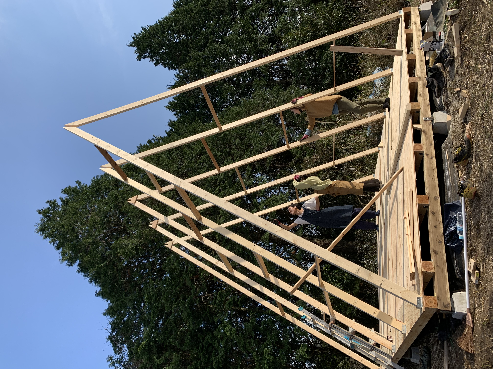

アメリカ縦断 4,265km の旅
メキシコ国境からカナダ国境まで、アメリカ西海岸を南北に貫く壮大なロングトレイル「PCT」。果てしなく続く砂漠、険しい岩峰、精度高く輝く美しい大自然を歩き通した、半年に及ぶ過酷で豊かな旅の記録です。

阿蘇の美しい自然の中に佇む、
手作りのAフレーム小屋「ココヤ。」。
私たちは壮大なロングトレイルへの旅や、
自然と調和するシンプルな暮らしの魅力を発信しています。

メキシコ国境からカナダ国境まで、アメリカ西海岸を南北に貫く壮大なロングトレイル「PCT」。果てしなく続く砂漠、険しい岩峰、精度高く輝く美しい大自然を歩き通した、半年に及ぶ過酷で豊かな旅の記録です。

南阿蘇の圧倒的なロケーションの中に、自分たちの手でゼロからAフレーム小屋を建てるセルフビルドプロジェクト。自然と調和し、人々が集うシンプルな暮らしの拠点「ココヤ。」が形になっていく過程をお届けします。

最果ての地、南米パタゴニアの大地へ。猛烈な嵐、突き刺さるような岩峰、精度高く輝く巨大な氷河。地球の原始的な鼓動をダイレクトに肌で感じる、ハイカー憧れの聖地を巡る旅の記録です。